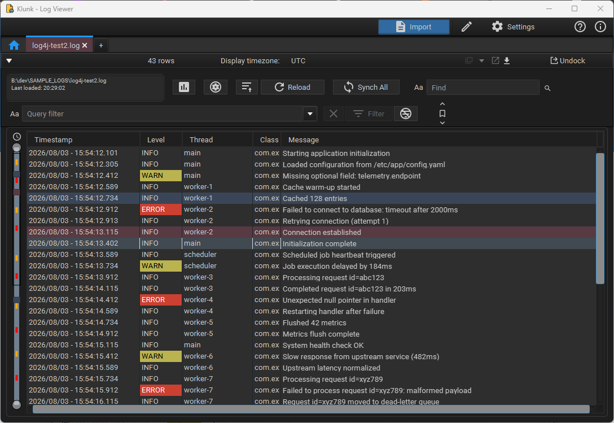

A fast, no-fuss desktop log viewer for local files, databases, Kubernetes pods, SFTP, and HTTP sources — with merging, SQL-like filtering and analysis.

Local files, databases, Kubernetes pods, SFTP, HTTP get/post URLs.
Combine files into one chronological stream with colour-coded sources.
SQL-like syntax — LIKE, =, AND, OR, nested
groups.
Pin important rows with multi-colour bookmarks, comments, and time markers — then filter down to just what you've flagged.
Dual-thumb vertical slider with error/warning markers and live viewport tracking.
Handles millions of rows via SQLite-backed paging — smooth scrolling at any scale.
Real-time monitoring with automatic file-rotation detection.
Saves and restores opened files, filters, window positions, and bookmarks.
Regex-based pattern engine supports Log4j, Logback, CSV, JSON, XML, and custom formats.
Dockable tabs, in-text search with highlighting, multi-colour bookmarks, timestamp timezone conversion, light/dark theme.
Error/warning reports and charts with best-effort redaction of sensitive data — plus custom find/replace overrides — before anything is copied or exported. (useful for AI prompting)
| Document | Description |
|---|---|
| User Guide | Detailed instructions for all application features |
| Privacy Policy | How the application handles your data |
| Terms of Use | Licence and usage conditions |
Klunk - Log Viewer is free to use under a proprietary licence. See the full LICENSE text and the Terms of Use.